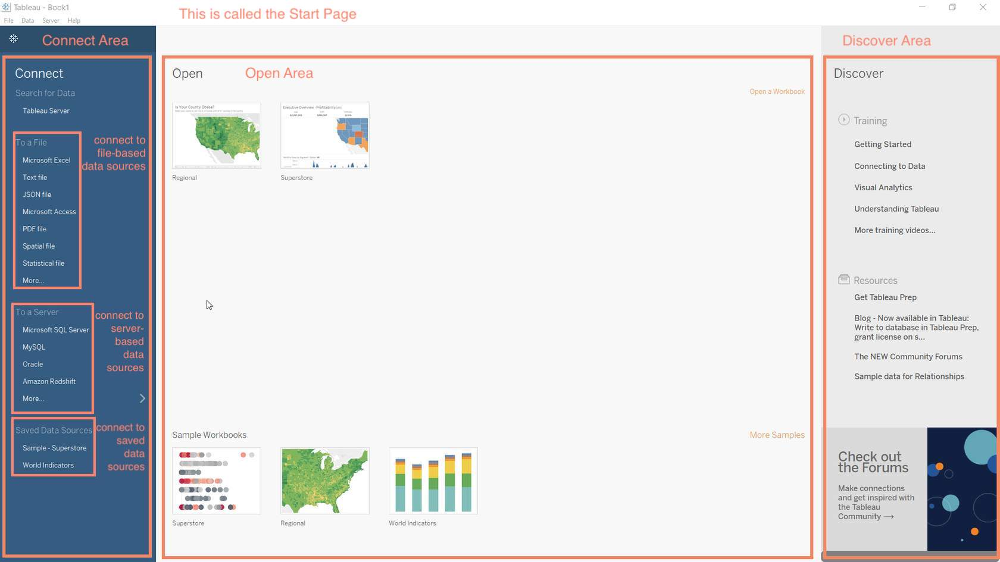
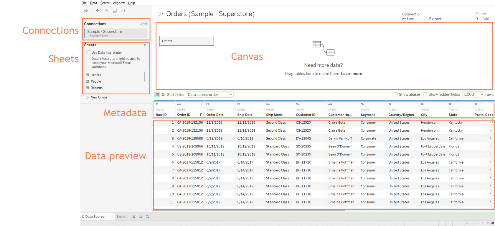
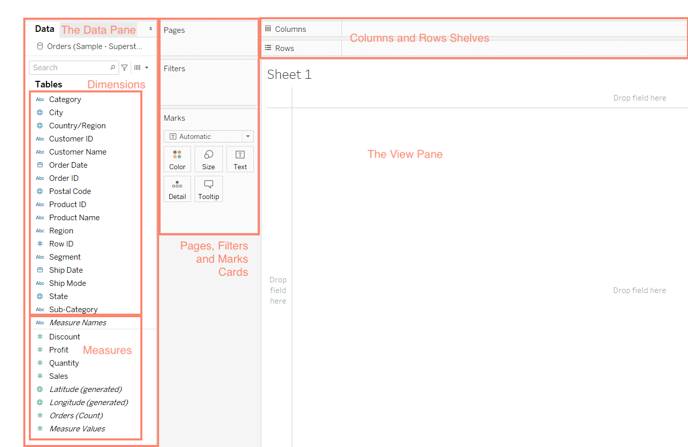

Week 1 Handout: Tableau Terminology
Learning Objective: Define key Tableau terminology
Tableau Common Types of Data and Data Fields
Tableau terminology consists of general data literacy as well as terminology specific to Tableau.
Data Sets
Data sets, databases, or data sources are collections of data. The different types of data sets that are used in Tableau include:
Spreadsheets organize data in a flat structure, meaning records are stored as single rows of data. MS Excel and Google Sheets are examples.
Relational databases store data in multiple tables, with each row assigned a unique identifier and with a logical connection between different tables. Users pull data from different tables together using Structured Query Language (SQL).
Cloud data consists of spreadsheets and relational databases that are stored in the cloud so that on-site servers are not necessary. Amazon Web Services and MS Azure are examples.
Spatial files such as .kml and .shp are also common in Tableau for mapping purposes.
Metadata is a set of data that describes other data. For example data fields (next) are stored as metadata.
Data Fields
When users connect Tableau to databases, Tableau automatically assigns the data fields in the data set a role and type.
Data Fields are the columns in your data set. They are also known as variables. They include a single piece of information for records (rows) in your data sets.
Role: Each data field can have either a Dimension or Measure role.
Dimensions are qualitative. These data fields describe or categorize data. These data fields can be text (string) or numerical with integers corresponding to different categories. (e.g. survey data on years of education or annual income often bins or slices the quantitative data)
Measures are quantitative. These data fields provide measurements and are numerical. These data fields can be used in calculations.
Type: String, Integer, Date, Geographic, etc.
Data Aggregation
Data aggregation refers to how data is combined. The level of granularity or aggregation in a row of data impacts the questions we can answer with the data and the visualizations we can create. Less aggregate (or disaggregate or more granular) data will have more observations that aggregated data. For example, data on average corn yields by state each year (Table 1) are less aggregate, and consist of more observations, than average corn yields for the entire U.S. by year (Table 2). More aggregated data combine the less aggregated data in some logical and useful way. In the corn yield example, the data are aggregated by taking the average yield across all states within the year. However, you might also take the maximum, minimum, or median values (or a variety of other statistics).
| State | Year | Yield (bu/ac) |
|---|---|---|
| Oregon | 2019 | 237 |
| Washington | 2019 | 237 |
| Arizona | 2019 | 231 |
[Table 1. Average U.S. Corn Yields by State (Less Aggregate/More Granular)]
| Year | Yield (bu/ac) |
|---|---|
| 2019 | 139 |
| 2018 | 137 |
| 2017 | 129 |
[Average U.S. Corn Yields (More Aggregate/Less Granular)]
What types of analyses might you be able to do with the state-level (more granular) data that you could not with the national-level (less granular) data above?
State-level data would enable us to explore some potential reasons for differences in yields that can be explained with geographic and temporal variation, for example:
How does weather influence yields?
How do soil conditions influence yields?
How do state policies or funding influence yields?
And more!
Could these data be made even more granular? How?
County-level
Farm-level
Field-level
Month-level
Day-level
And more!
Data Aggregation in Tableau: Once you connect Tableau to a dataset, there are several ways to aggregate your data. By default, Tableau likes to sum measures with common dimensions, but you can also construct averages, percentages, and much, much more!
Wide Versus Long Formatted Data
| Year | Oregon | Washington | Arizona |
|---|---|---|---|
| 2019 | 237 | 237 | 231 |
[Average U.S. Corn Yields by State (Less Aggregated/More Granular) Wide Format]
Note that Tableau prefers long-formatted data — once the data is loaded into Tableau in long format you can perform aggregations.
Note that most regression analyses require wide-formatted data — to accomplish this we can reshape our data in R to prepare it for analysis.
Tableau Products
Tableau offers a variety of products that each serve a specific purpose. In this course we will be using Tableau Desktop and Tableau Public, but it might be useful to have an idea of their other products.
Tableau Desktop is a desktop application that allows you to access, visualize, and analyze your data. It uses an intuitive drag and drop interface and can be used offline. It can be used to create interactive dashboards and stories and can also publish to a server or online environment.
Tableau Public is a free cloud service that allows you to share data with the world. To share a project through Tableau Public, you must publish it through Tableau Desktop. Tableau Public is browser-based (rather than locally installed) and can only be accessed online. Tableau Public should NOT be used for sharing confidential data.
Tableau Prep is a tool to prepare your data for analysis in Tableau Desktop. It allows you to combine data from multiple sources, clean your data, and transform your data. Because Tableau Prep is not as powerful of an analysis tool as R, we will be using R to accomplish these tasks instead.
Tableau Server and Online are paid cloud services that enable organizations to host workboks, data sources, prep flows, and data extracts published through Tableau Prep or Desktop. You can schedule data extracts and analyses to be automatically refreshed as often as every 15 minutes. These services are an alternative to Tableau Public for data and analyses that are confidential to an organization, but that can be usefully shared within the organization.
Tableau File Types
Tableau uses several different file types:
Workbooks (.twb) - Hold one or more worksheets or dashboards. These do not include the data.
Bookmarks (.tbm) - Contain a single worksheet and are easy to share your work.
Packaged Workbooks (.twbx) - Contain the workbook along with any other supporting data or images.
Extract (.hyper or .tde) - Local copy of a subset or entire data that you can use to share with others.
Data Source (.tds) - Shortcut for quickly connecting to the data. These files do not contain the actual data but rather the information to connect.
Packaged Data Source (.tdsx) - Contains the data source file as well as any local file data.
Tableau Desktop Views
The Start Page

Tableau opens on the Start Page.
The Connect area lists the data source types you can connect to. These include file-based, server-based, and saved data sources.
The Open area shows thumbnail images and links to recently used or saved visualizations. At the bottom are sample workbooks included in Tableau Desktop.
The Discover area gives links to training information and helpful resources.
The Data Source Page

The Data Source Page lets us select the tables or sheets we want to use from our data.
Connections shows the name of the data source.
Sheets lists the names of the worksheets in the data source.
To select a sheet, you can drag it to the Canvas or double-click it.
The Metadata shows information about the data, such as the field name and data type. You can edit the metadata on this page.
The Data Preview shows the first 1,000 rows of the data.
Worksheets/Workspaces

The Data Pane lists all the fields from the source data. It also lists the name of the data conection.
Dimensions list all fields that contain qualitative or categorical data.
Measures list all fields that contain quantifiable data.
The Pages shelf lets you break a view into a series of pages so you can better analyze how a specific field affects the rest of the data in a view.
The Filters shelf allows you to include and exclude specific data.
The Marks shelf is used to set different properties for fields in the visualization.
The Columns and Rows Shelves are used to create a structure for your visualization.
The View Pane shows your visualization.